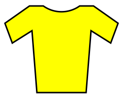
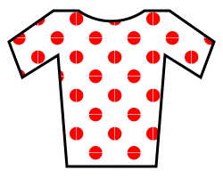

Until 1930, riders were racing individually and there where no teams. Nowadays, cycling is, even if it is not obviously apparent to unfamiliar spectators, a team sport. In the tour de France, there are usually between 20 and 22 teams participating. All of the World Tour teams (the highest level of cycling competition) are always participating. The best performing team of the Pro Series (the second competition division) is also automaticaly invited. The other teams are selected by the race organisers and are usually french teams competing in the Pro Series. Each team fields the same number of riders, that is 9 for the last few years. Overall, there are always around 200 riders taking part in the race every year. The group of all the riders taking the start is called the peloton.
At the end of each stage, the winner of that stage is honoured on the day's podium. The ranking of each stage is based on the time each rider took to finish, that is the winner is the first across the line. Each stage has a time limit (x minutes after the winner crosses the line) and riders finishing outside it are eliminated.
More importantly, there is the main ranking that defines the overall races winner. This is called the General Classification (GC). To compute this ranking, the time taken by each rider on each stage is added up and the one with the smallest time after the last stage is the winner. Finishing inside the top 10 of the GC is a career highlight for a lot of riders. There are also 4 other competitions over the course of the entire race. Some of them have a defining jersey that is worn by the leader of that classification at every stage.
General Classification
 The leader wears the yellow jersey. As mentionned above, the time taken to complete all stages decides the winner.
Mountains Classification
 The leader wears the King of the Mountain (KOM) jersey. Riders arriving first atop classified (notable) climbs gain points. The number of points and the number of riders receiving those points depend on the classification of the climb. They are in order of least to most important: fourth category, third category, second category, first category, Hors catégory. The rider with the most points after all stages wins.
Points Classification
 The leader wears the green jersey. Points are awarded to riders at intermediate sprints (virtual finish lines before the actual end of the stage) and at the end of stages expected to finish in a bunch sprint. The rider with the most points after all stages wins.
The leader wears the green jersey. Points are awarded to riders at intermediate sprints (virtual finish lines before the actual end of the stage) and at the end of stages expected to finish in a bunch sprint. The rider with the most points after all stages wins.
Young Rider Classification
 The leader wears the white jersey. The winner is decided exactly as for the General Classification but only riders under the age of 26 are taken into account.
The leader wears the white jersey. The winner is decided exactly as for the General Classification but only riders under the age of 26 are taken into account.
Combativity award
After the last stage, a jury designates the most combative rider of that edition. That same jury also designates the most combative rider of each stage. Whilst that rider does not get a distinctive jersey, he will wear a red number plate for the next stage.
Team classification
This prize is not considered to be very important and the teams never plan their strategy around winning it. The computation changes frequently but always considers the entire teams performance in the General Classification. At each stage, the currently leading team's members wear yellow number plates and sometimes yellow helmets.
A stage can be considered in isolation as a one day bike race where the winner is the rider crossing the line first. There are two main categories of stages with a different set of rules.
Time trial
- Individual time trial: riders complete a course alone and starting at a fixed time interval between them (e.g. 1 minute). The winner is the rider that took the least amount of time to complete the stage.
- Team time trial: work just like individual time trials but each team starts and rides together. The final time is the same for every rider on the same team and is taken once the last rider of that team crosses the line.
Mass start
During these stages the entire peloton starts at the same time. The winner is the rider that crosses the finish line first. The type of stage has a big influence on how it is raced, both in terms of team strategy and which type of rider has a chance at winning.
- Flat stage: these stages are usually long (> 200km) with no steep climbs (< 800m of climbing over the entire stage). They usually finish with a bunch sprint.
- Hilly stage: they are not as long (> 170km) with more climbing and steeper climbs (< 1500m). They can finish with a bunch sprint, but often the pure sprinters do not make it to the finish line with the main group and cannot contest them. Breakaways might also have a chance.
- Mountain stage: now there is a lot more climbing (> 200m over the stage) with longer and steeper climbs. These stages often finish in a reduced bunch sprint of a smaller group (< 20) of riders. The breakaway might also have a chance and the GC contenders usually try to attack each other to gain time on their rivals.
- High mountain stage: a lot of climbing is involved, at least 3000m, and high altitudes of more than 2000m are reached. A reduced group, or even individual riders, will contest the win at the end of it. The GC battle is fierce on these stages.
This information tab only provides a broad overview of the Tour de France. Our visualization aims to provide a graphic overview of the scale and geographic history of the race through the years, alongside an easy way to see it's evolution both in terms of results and key statistics. If you want to learn more about it's history, the easiest place to get started is the Wikipedia page or the official Tour de France website.
Road cycling is a complexe sport with strategies that are not obvious on tv and also a rich community around it. There are quite a few ressources on the internet that go in depth on these aspects. Have fun looking! We can suggest that you start with the Lanterne Rouge youtube channel for race strategies and the Cycling Podcast for more about the history and community around the race. During the competition there is also live coverage of the race on many national tv channels.